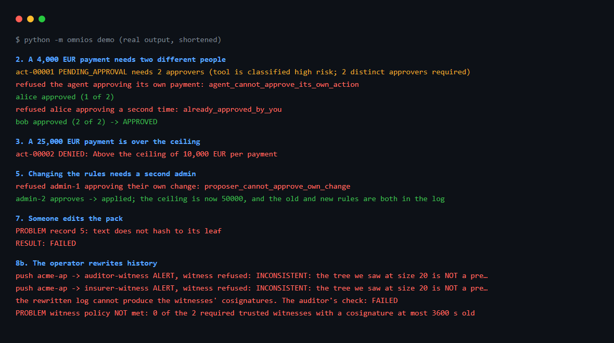

omnios
Make AI agents ask before they act, and keep a record nobody can quietly edit.
Four-eyes approval for software agents, plus a black box that a third party can check without trusting you. The Gateway sits between an agent and the systems it acts on, applies your rules, waits for named humans when the rules say so, and writes every step to a signed, append-only log that an auditor verifies offline.

Real output of python -m omnios demo, shortened. All data is invented.
Try it
git clone https://github.com/ntinosgkiou-code/omnios && cd omnios pip install -r requirements.txt python -m omnios demo
Python 3.11 or 3.12. CI runs the 175 tests on Linux and Windows and builds the Docker image.
What it does
DecideA JSON rules file per customer: allowed at once, needs N different people, or refused, with limits per day, week or month. The agent cannot approve itself and nobody counts twice.
RecordEvery step is a record written before the action happens, in a signed Merkle-tree log, one per customer.
ProveAn evidence pack a third party checks offline. Witnesses on other servers refuse any checkpoint that rewrites the past.
What it is not
A draft: never run with a real agent, bank or customer, no external security review. Approvals are attested by the platform and not signed by the humans themselves. It does not stop prompt injection, certify anything or make you compliant with any regulation. All rights reserved: the source is published for reading and review. Read the known limits first.